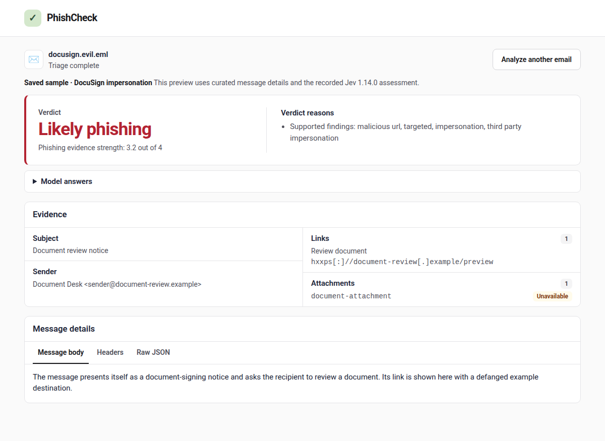
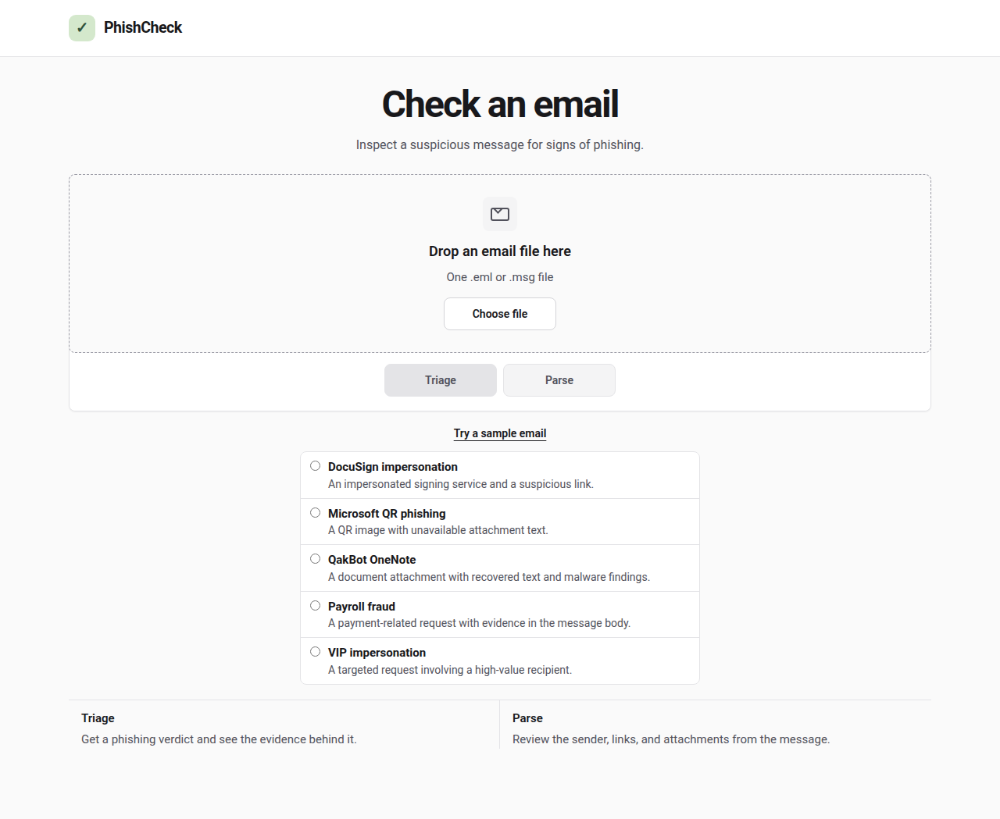
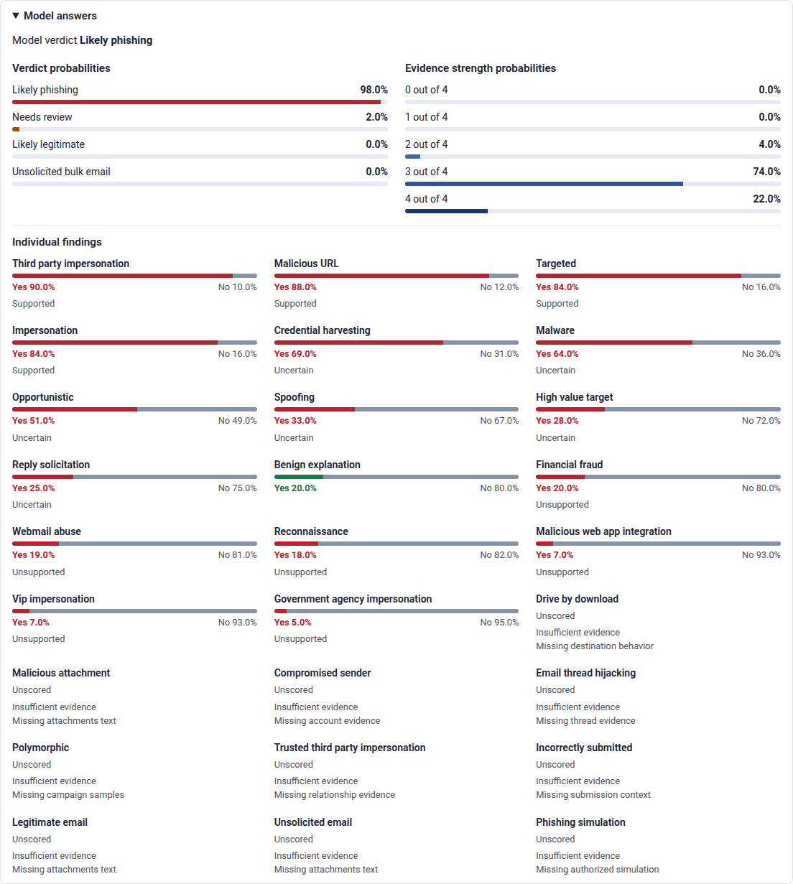

Triage suspicious emails with Jev
Inspect suspicious Outlook and RFC 822 emails. Parse the message to see the evidence, or triage it with a TypeSafe System One decision model.

Command line
Parse an email from your terminal
Inspect headers, links, and attachments from a saved email. Parsing works without a provider key.
$ phishcheck parse email.eml
File: email.eml
Headers:
From: analyst@example.com
To: recipient@example.net
Subject: Example message
URLs:
https://example.com/info -> https://example.com/info
Attachments:
Body extraction: completeShortened parse output.
Triage an email from your terminal
Get a verdict, evidence score, and findings from a configured TypeSafe System One decision model.
$ phishcheck triage email.eml --json
{
"triage": {
"final_verdict": "likely_phishing",
"phishing_evidence_score": {"score": 3.0},
"attacks": ["spoofing"]
},
"parse": {"filename": "email.eml"}
}Excerpt from a CLI test with a stubbed assessment.
Local web app
Drop in an Outlook .msg or .eml. Choose Parse to inspect the message or Triage to get a verdict from your configured TypeSafe decision model.
phishcheck serveOpen the URL printed in your terminal. You can explore a built-in sample without a provider key.

Installation
Install with uv
Run the commands from the directory containing your email file.
uv tool install phishcheck
phishcheck parse email.eml
phishcheck serveDocker Compose quickstart
Start the stack, then open http://127.0.0.1:8000.
git clone https://github.com/zer0ttl/phishcheck.git
cd phishcheck
docker compose up --build -dExplore the sample
Follow the saved DocuSign impersonation report from message evidence to verdict.
Inspect the message evidence
The subject reads “Document review notice.” The “Review document” link points to the defanged destination document-review[.]example. Attachment extraction was unavailable in this saved sample.
Review the verdict
The report labels the email Likely phishing and rates phishing evidence strength 3.2 out of 4.
See model answers
